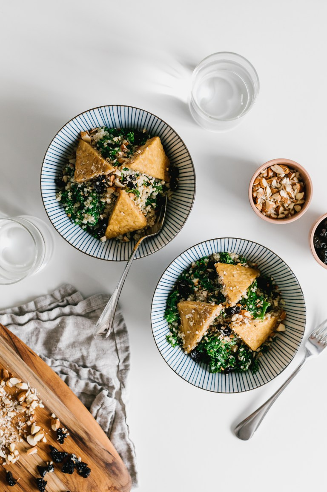
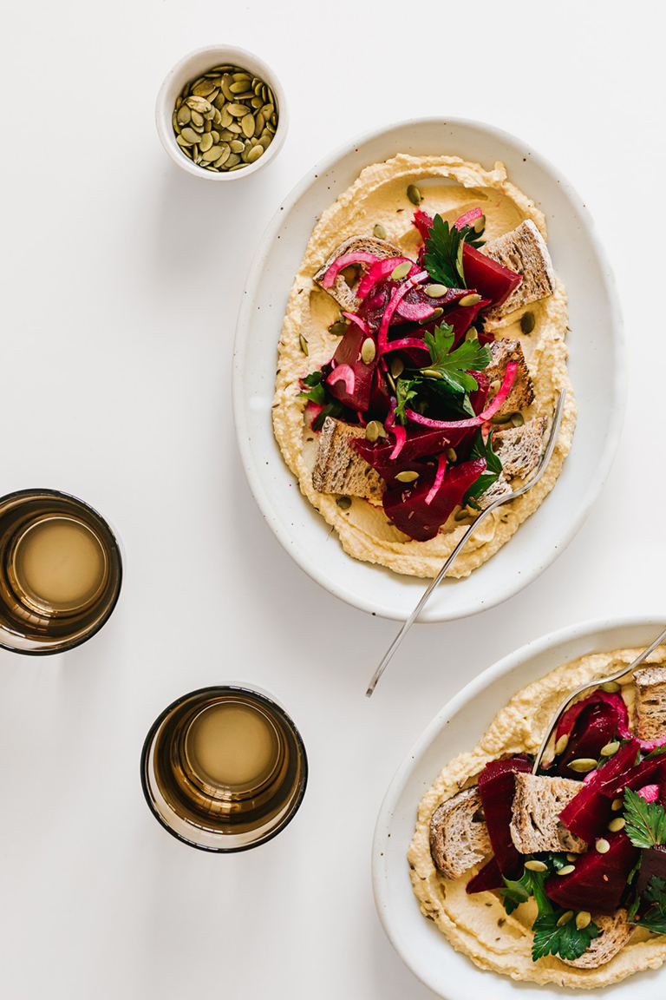

| [page 1] | [page 2] | [page 3] | [page 4] | [home] |
Vegan Recipessimple. easy. comfort food. |
|  |
[Perfect salad with little prep time needed] CRUNCHY KALE & QUINOA SALAD W/ APPLE CIDER TEMPEH & CINNAMON VINAIGRETTEMakes 2 salad servings, with extra tempeh.
Ingredients
To continue click here... |
|
[Great for sharing] BEET-CENTRIC HUMMUS & MARINATED SALAD W/ TOASTED RYE & CARAWAY SEEDSMakes 4 servings of salad, with extra hummus.
Ingredients
To continue click here |
 |